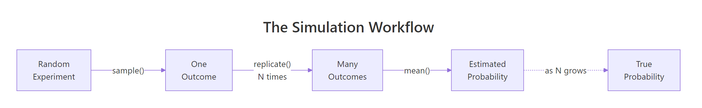
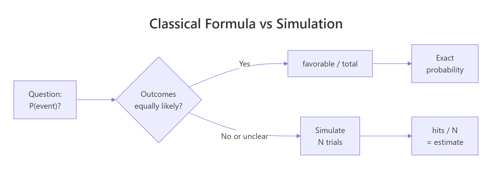
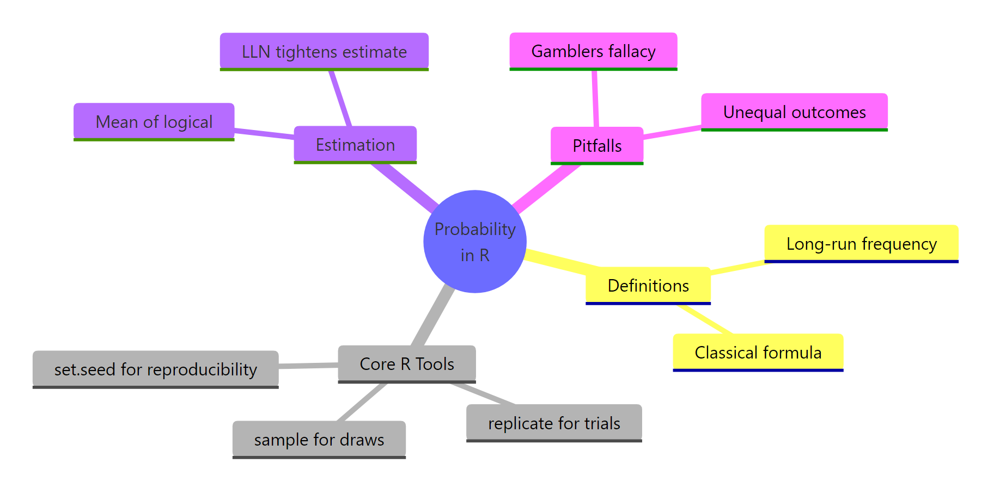

Probability in R: Build Genuine Intuition Through Simulation, Before Any Formula
Probability is the long-run frequency of an event, measured by repeating a random experiment many times and counting how often it happens. In R, the pair sample() and replicate() lets you flip 10,000 coins in a second and watch the frequency of heads converge to 0.5 before you see a single formula.
What is probability, really?
The textbook shortcut, favorable outcomes / total outcomes, looks clean but breaks the moment outcomes aren't equally likely or there are too many to count. A sharper definition sits one line above every simulation: probability is the long-run frequency of an event. Before any formula, let's watch that frequency emerge in R. We flip a fair coin 10,000 times with base R and ask how often heads comes up.
Three lines, one answer. We drew 10,000 independent fair-coin outcomes, asked whether each one was heads, and computed the proportion. The answer, 0.5028, is not exactly 0.5, and that gap matters. It's the finite-sample error. Repeat with more flips and it shrinks. Probability, in this simulation-first view, is the number your proportion is heading toward.
Let's make the convergence visible. We repeat the experiment at four different sample sizes and watch the proportion of heads stabilize as n grows.
Ten flips gave us 60% heads, noisy and unreliable. At 10,000 flips we're within 0.004 of the true probability. That is the difference between guessing and estimating. In casual speech, "probability" gets used three ways that blur the underlying idea:
- A degree of belief ("There's a 70% chance it rains tomorrow."), subjective, hard to verify.
- A classical count ("One in six sides, so 1/6."), only valid when outcomes are equally likely.
- A long-run frequency ("Roll the die a million times, count the sixes, divide."), testable, falsifiable, and the one we can simulate.
This tutorial commits to definition 3. Everything below is a way to measure a long-run frequency without waiting a lifetime.
Try it: Estimate the probability of tails from 5,000 flips of a fair coin, using set.seed(7). Assign the result to ex_p_tails.
Click to reveal solution
Explanation: We used the same three-step recipe: seed, draw, proportion. The proportion of tails in 5,000 flips will sit near 0.5, just as the proportion of heads does. By symmetry, mean(ex_flips == "H") + mean(ex_flips == "T") equals 1.
How do you simulate a random experiment in R?
Any probability experiment in R reduces to three tools. sample() draws outcomes from a defined set. replicate() repeats whatever you ask, many times. set.seed() fixes the random number generator so your output is reproducible across runs. Master those three and you can simulate any discrete experiment this tutorial will throw at you.

Figure 1: The four-step simulation loop, draw, repeat, count, estimate.
Start with the simplest experiment in probability: rolling one fair six-sided die.
sample(1:6, size = 1) drew one outcome uniformly at random from the vector 1:6. Running it once gives you exactly what rolling a physical die gives you: a single number between 1 and 6. But one roll is not an experiment we can learn from. Let's roll 10 times in a row.
Notice replace = TRUE. Without it, sample() would draw without replacement, meaning once you roll a 3, that 3 is gone from the pool. Dice don't work like that. Every roll is independent: yesterday's 3 doesn't change today's odds. Whenever you simulate repeatable outcomes, replace = TRUE is mandatory.
replace = TRUE is mandatory for repeatable experiments. Default is FALSE, which draws without replacement. Call sample(1:6, 10) and R errors out because you asked for 10 outcomes from a pool of 6. Add replace = TRUE to tell R that the same outcome can happen again.Random draws are fun until you try to debug them. Two people running the same code can see different numbers. set.seed() pins the random number generator to a starting state, so the sequence of draws is reproducible on any machine.
Both calls return the exact same vector because we reset the seed between them. Any tutorial example you run after set.seed(123) will match the output shown here. This is how we keep a classroom of learners looking at the same numbers.
Try it: Draw 100 cards from a standard 52-card deck with replacement (imagine shuffling and reinserting each card after drawing). Use set.seed(9). Store the draws in ex_cards and confirm its length is 100.
Click to reveal solution
Explanation: The deck is a vector of 52 card labels. sample(deck, 100, replace = TRUE) draws 100 times from that pool, with replacement, so the same card can appear more than once across the 100 draws.
How do you estimate probability from a simulation?
Once you have a vector of simulated outcomes, estimating a probability is one line of R. Comparison operators like ==, >=, and %% return a logical vector of TRUE/FALSE, and mean() on a logical vector returns the fraction of TRUEs. That fraction is your estimated probability.
Let's estimate three probabilities about a single die roll: P(die = 6), P(die ≥ 5), and P(die is even). We generate one large vector of rolls and ask three different questions of it.
We're within 0.0012 of the true value 1/6 ≈ 0.1667. The power of this pattern is reuse. big_rolls is already in memory, so asking a second or third question costs us nothing.
Two faces out of six satisfy the event, so the true value is 2/6 ≈ 0.333. Our estimate of 0.3339 is right on top of it.
Three even faces out of six gives true value 0.5, and our 10,000-roll estimate is 0.5021. Every question about our die reduces to "what fraction of simulated rolls satisfied this event?" This mean()-of-logical pattern is the single most useful trick in simulation-based probability.
NAs in a logical vector silently poison mean(). mean(c(TRUE, NA, FALSE)) returns NA, not 0.5. Simulated data rarely has NA, but real-world data often does. When in doubt, use mean(x, na.rm = TRUE) or check with sum(is.na(x)) before computing a proportion.Try it: Draw 10,000 rolls with set.seed(55) and estimate P(die is even). Store the answer in ex_p_even.
Click to reveal solution
Explanation: ex_rolls %% 2 == 0 produces a logical vector that is TRUE for even-valued rolls and FALSE for odd ones. mean() then returns the proportion of TRUEs, which estimates P(even).
Why does simulation accuracy depend on the number of trials?
A 10-flip estimate and a 10,000-flip estimate are both valid probabilities, but they mean different things in practice. The first is noisy, the second is sharp. What rule connects them? The Law of Large Numbers. In one sentence: as the number of independent trials grows, the sample proportion converges to the true probability.
Let's see the law at work by estimating P(die = 3) at four sample sizes.
At 100 trials we were off by 0.017. At 100,000 we're off by 0.0004. The estimate doesn't just wander, it homes in. Formally:
$$P(|\hat{p}_n - p| > \epsilon) \to 0 \quad \text{as} \quad n \to \infty$$
Where:
- $\hat{p}_n$ is the sample proportion (our estimate from $n$ trials)
- $p$ is the true probability
- $\epsilon$ is any small positive gap you pick
In plain English: pick any tolerance $\epsilon$ you like, say 0.001. As $n$ grows, the chance that your estimate is more than $\epsilon$ away from the truth shrinks to zero. Simulation is reliable because the math says it is.
To see that convergence, we plot the running proportion of sixes as we flip through the first 10,000 rolls one by one.
The line is wild at the start, one lucky 6 early on can spike the estimate to 1.0. After 1,000 rolls it stays within a band around 1/6. By 10,000 rolls it's essentially flat against the red dashed line at 0.1667. This curve is the Law of Large Numbers on a single page.
Try it: Estimate P(die = 3) from 500 rolls, then from 50,000 rolls, both with set.seed(33). Store in ex_small and ex_large. Which is closer to 1/6?
Click to reveal solution
Explanation: The 500-roll estimate missed by about 0.009. The 50,000-roll estimate missed by about 0.0008, ten times closer. Doubling or tripling n tightens the estimate, but you get diminishing returns: going from 50k to 500k halves the error only in expectation, not guaranteed.
When does the "favorable over total" formula actually work?
We've been estimating probabilities without ever writing $P = k/n$. That formula, the classical definition, isn't wrong, but it has a hidden requirement: all outcomes must be equally likely. For a fair coin, a fair die, a shuffled deck of cards, that's true. For most things that matter, weather, customer churn, disease spread, a loaded casino die, it is not. Simulation works in both worlds. The formula works in only one.

Figure 2: When outcomes are equally likely, the formula works. When they aren't, simulation wins.
Let's break the formula on purpose. Imagine a die weighted so that 6 comes up half the time and the other five faces split the remaining half equally. The prob argument of sample() accepts a probability vector, one entry per outcome.
Our estimate of P(6) is 0.5016, close to the true 0.5. The classical formula would have told us 1/6 ≈ 0.167, off by a factor of three. For loaded dice, biased coins, unfair spinners, and every real-world generator of randomness, "favorable / total" is a confident wrong answer unless you know the outcomes are equally likely.
mean(sample(outcomes, N, TRUE) == event) converges to exactly (count of favorable) / (count of outcomes) as N grows. So the formula isn't wrong, it's just narrow. Simulation always works. The formula works only under the equally-likely assumption.Try it: Simulate a biased coin that lands heads 70% of the time. Draw 20,000 flips with set.seed(88) and estimate P(heads). Store in ex_p_heads.
Click to reveal solution
Explanation: The prob = c(0.7, 0.3) argument aligns element-by-element with the c("H", "T") outcome vector, telling sample() to weight heads at 0.7 and tails at 0.3. The estimate 0.7029 is within 0.003 of the true 0.7.
How do you simulate compound or multi-step experiments?
Real problems rarely reduce to one sample per trial. Rolling two dice and asking "what's the probability the sum is 7?" is a compound experiment, two atomic random draws make one trial. That's what replicate() is for. It takes a count and an expression, runs the expression that many times, and gives you back a vector (or array) of results.
The recipe: write a function that runs one trial, test it on a single call, then wrap it in replicate().
The classical answer is 6/36 ≈ 0.1667, because of the 36 equally likely ordered outcomes (first die, second die), six have a sum of 7: (1,6), (2,5), (3,4), (4,3), (5,2), (6,1). Our simulation estimate of 0.1685 hits within 0.002 of that truth, and we never had to enumerate the 36 cases by hand. For dice this was cute. For a 10-card poker hand, the enumeration is hopeless. The simulation is still one line.
Let's try a question that's harder to reason about by hand: rolling one die four times, what's the probability of getting at least one 6?
Our estimate is 0.5201. The exact answer, using the complement rule, is $1 - (5/6)^4 = 1 - 0.4823 = 0.5177$. Simulation got us there in one line. More importantly, the same one-line pattern generalizes: change 4 to 6, the die range to something else, the event to "no 6s in a row," and the code still works. Classical derivation requires a new pencil-and-paper proof every time.
replicate(). Call one_four_roll_trial() by itself and make sure it returns a sensible TRUE or FALSE. Debugging 10,000 silent trials is painful. Debugging one is a keystroke.Try it: Estimate P(sum of two dice ≥ 10) from 20,000 trials, using set.seed(404). Store in ex_p_big.
Click to reveal solution
Explanation: Of 36 ordered outcomes, six have a sum of 10, 11, or 12: (4,6), (5,5), (5,6), (6,4), (6,5), (6,6). That gives a true probability of 6/36 ≈ 0.1667. Our 20,000-trial estimate of 0.1665 sits within 0.0002 of truth.
Practice Exercises
Each capstone below combines at least two concepts from the tutorial. Use distinct variable names (prefixed my_) so you don't overwrite anything from the code above.
Exercise 1: Three heads in a row
Estimate the probability that 10 flips of a fair coin contain at least three heads in a row somewhere. Use 10,000 trials and set.seed(11). Store the answer in my_p_streak.
Hint: rle() returns run-length encoding. rle(c(T,T,T,F))$lengths gives c(3, 1). You want to check whether any run of TRUEs has length ≥ 3.
Click to reveal solution
Explanation: Each trial flips 10 coins, finds runs of identical outcomes with rle(), pulls out the run lengths where the value was "H", and checks whether any of them reach 3. The exact answer by combinatorics is around 0.508, matching our estimate.
Exercise 2: Birthday problem
In a room of 23 people, estimate the probability that at least two share a birthday. Ignore leap years (assume 365 equally likely birthdays). Use 10,000 trials and set.seed(222). Store the answer in my_p_bday.
Hint: sample(1:365, 23, replace = TRUE) draws 23 birthdays. duplicated() returns TRUE for the second-and-later occurrence of each repeated value.
Click to reveal solution
Explanation: The exact classical answer, $1 - \prod_{k=0}^{22}\frac{365-k}{365}$, is 0.5073. Our simulation of 10,000 trials lands at 0.5072, within 0.0001. This is the famous result that surprises most people: a room of just 23 needs for a 50-50 shot at a shared birthday, not the 183 that pure halving of 365 might suggest.
Exercise 3: Monty Hall (always switch)
In the Monty Hall game show: three doors, one prize. You pick a door. The host, who knows what's behind each door, opens one of the two remaining doors to reveal no prize. You're offered the choice to switch to the last unopened door. Estimate the win rate for the "always switch" strategy over 10,000 games, using set.seed(3). Store the answer in my_p_win.
Hint: Let the prize be a random door from 1:3. Let your first pick be a random door. The host opens a door that is neither the prize nor your pick. Switching means picking the remaining unopened door.
Click to reveal solution
Explanation: The classical answer for "always switch" is 2/3 ≈ 0.6667. Our estimate of 0.6719 is within 0.006. The setdiff(1:3, c(prize, pick)) trick gives the host's legal doors, anything that is neither the prize nor your pick. The if (length(...) == 1) guard matters: when your pick is wrong, the host has exactly one legal door, and sample() on a length-1 vector behaves confusingly (it samples from 1:x instead of the vector itself), so we hard-code that branch.
Complete Example: Birthday problem across room sizes
We combine everything, one-trial function, replicate(), mean() of logical, plotting, to answer a richer question: how does the probability of a shared birthday change as the room grows?
At 5 people, you have a 3% shot. At 23, it flips past 50%. By 50, a shared birthday is near-certain. The curve is surprisingly steep. Let's visualize it.
The red dashed lines cross at almost exactly n = 23, p = 0.5. That's the famous "birthday paradox" point. We recovered it with 10 lines of base R and no combinatorics formula. That's the whole pitch of this tutorial: simulation lets you answer hard probability questions by asking R to do the counting.
Summary

Figure 3: Probability in R at a glance, definitions, tools, estimation, pitfalls.
Everything in this tutorial condenses to six ideas.
| Concept | Takeaway |
|---|---|
| Definition | Probability is the long-run frequency of an event, not a promise about the next outcome. |
| Core tools | sample() draws, replicate() repeats, set.seed() reproduces. |
| Estimation trick | mean() of a logical vector equals the proportion of TRUEs, equals your estimated probability. |
| Law of Large Numbers | More trials tighten your estimate, but don't change the true probability. |
| Classical formula | favorable / total works only when outcomes are equally likely. Simulation works everywhere. |
| Compound events | Write a one-trial function, test it, then wrap it in replicate(). |
mean()-of-a-logical-vector trick is the Swiss Army knife of simulation-based probability. Any question that ends with "what's the probability that..." becomes mean(simulated_outcomes satisfied the event). Learn this pattern once and you can answer thousands of probability questions.References
- R Core Team. *
sample()function reference*, stats package documentation. R documentation - Peng, Roger D. R Programming for Data Science, Chapter 20: Simulation. bookdown.org
- Grolemund, G., Wickham, H. R for Data Science (2nd edition), chapter on iteration. r4ds.hadley.nz
- Ross, Sheldon M. A First Course in Probability, 10th edition. Pearson, 2019.
- PennState Eberly College of Science. STAT 414: Introduction to Probability Theory. online.stat.psu.edu
- Mosteller, Frederick. Fifty Challenging Problems in Probability with Solutions. Dover Publications.
Continue Learning
- Sample Spaces, Events, and Probability Axioms in R, formalize what you just simulated, with Monte Carlo proofs of Kolmogorov's three axioms.
- Conditional Probability in R, the natural next step, same simulation toolkit applied to P(A|B), Bayes' rule, and independence.
- Law of Large Numbers vs CLT in R, where LLN meets its more famous cousin, the Central Limit Theorem.